n ka
ka
Never Out of Kiwis Again
Write it down once.
The right list in every store.
Built for privacy.
No tracking, no ads, no account.
noka is a shopping list for iPhone that keeps one list for each store. Add milk once and it shows up wherever you buy milk, sorted by category in the order you walk through the store. Share with your household through iCloud and see who is shopping where, live. It also adapts to the iPhone Duo: open like a ring-bound notebook, or folded with the controls in the status strip.
Photos

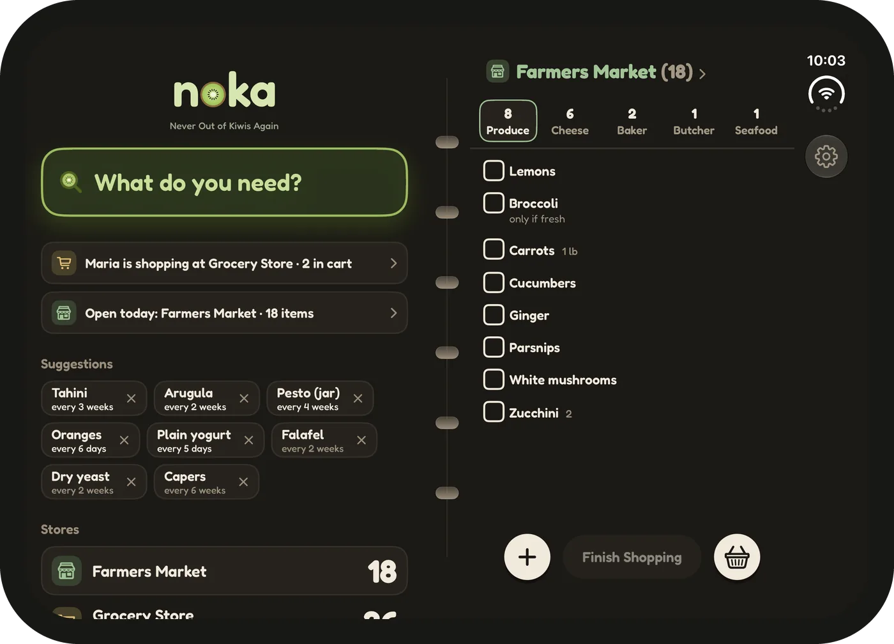
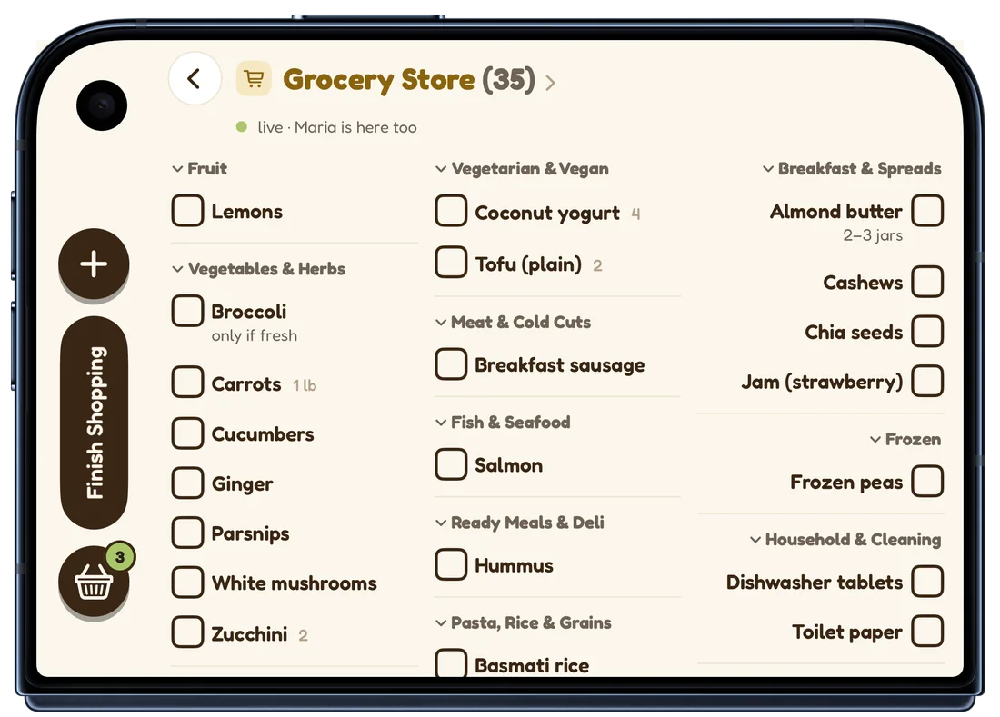
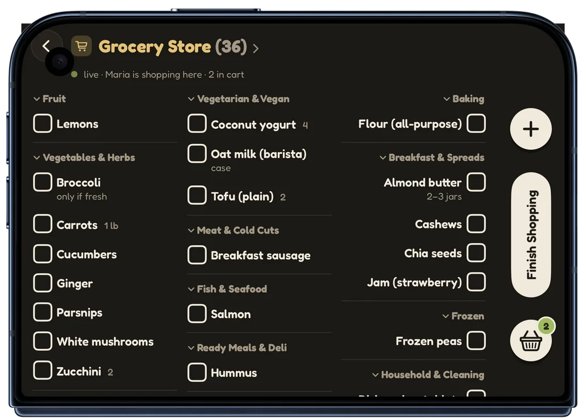
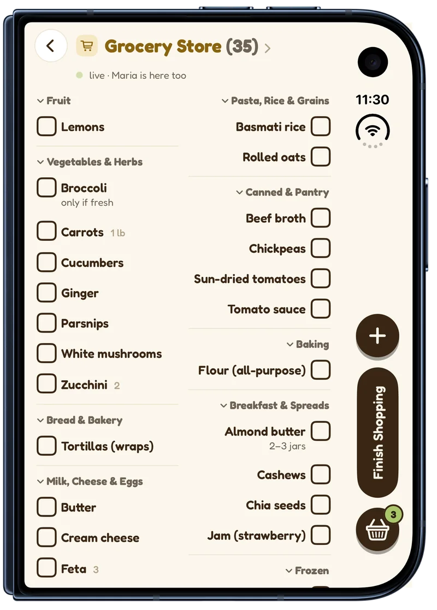
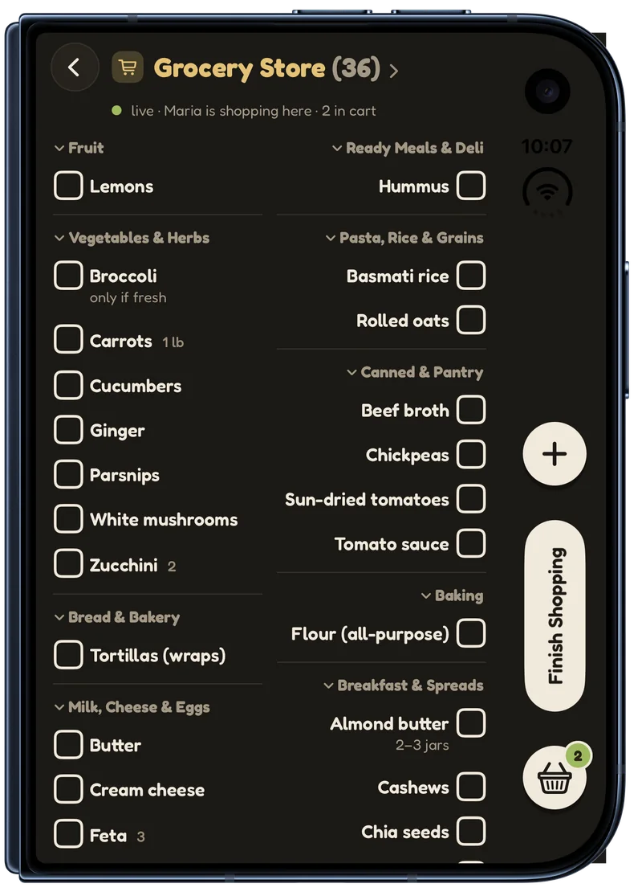
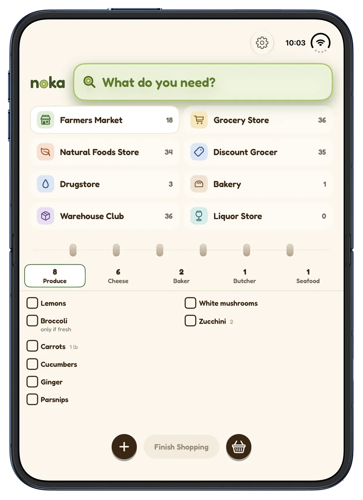
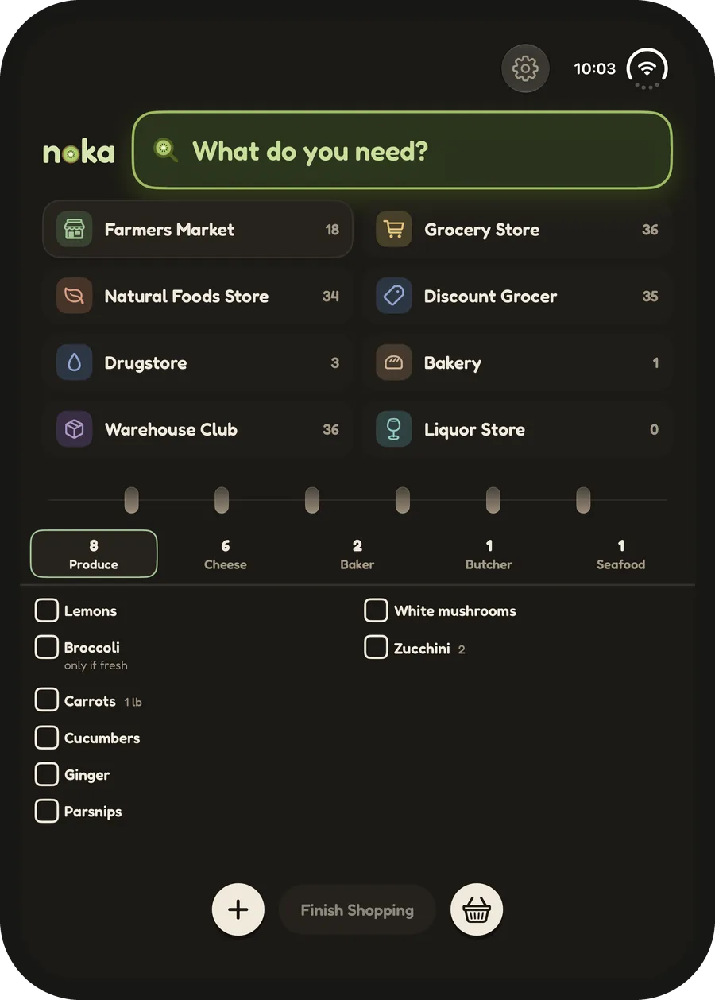
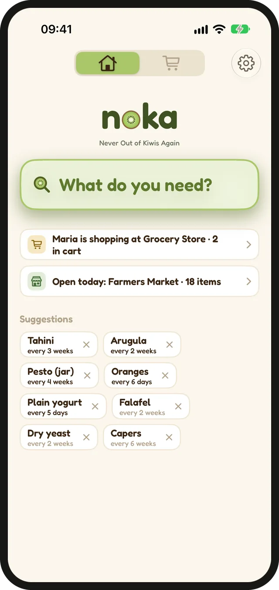
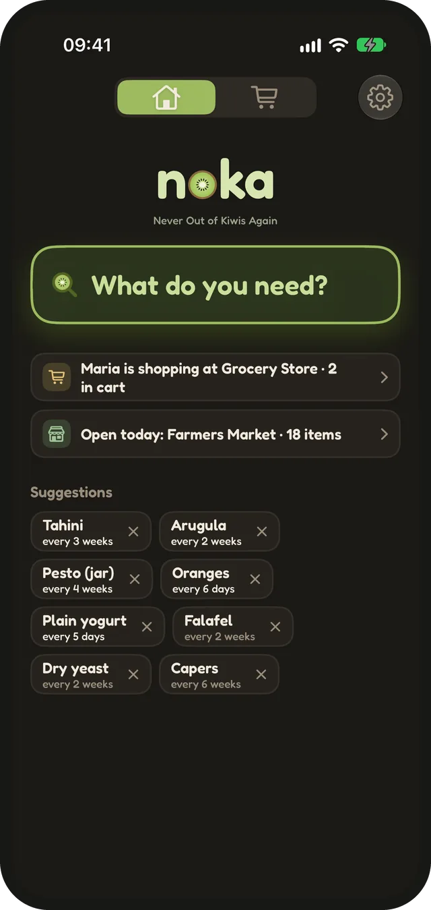
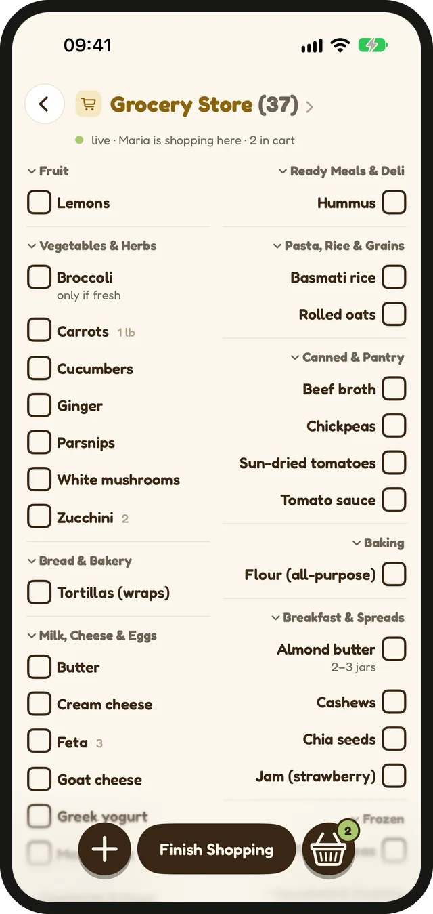
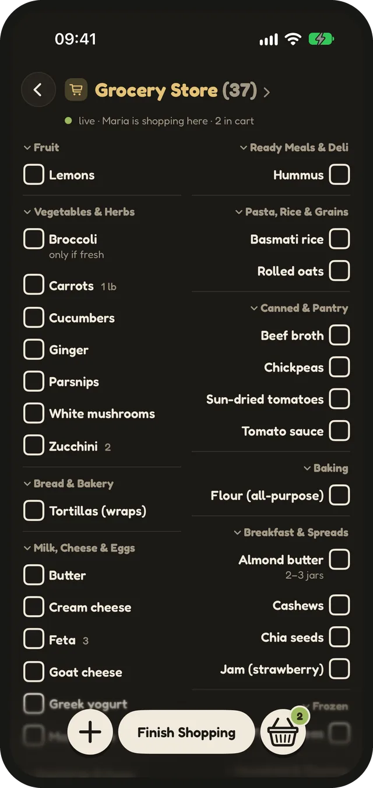
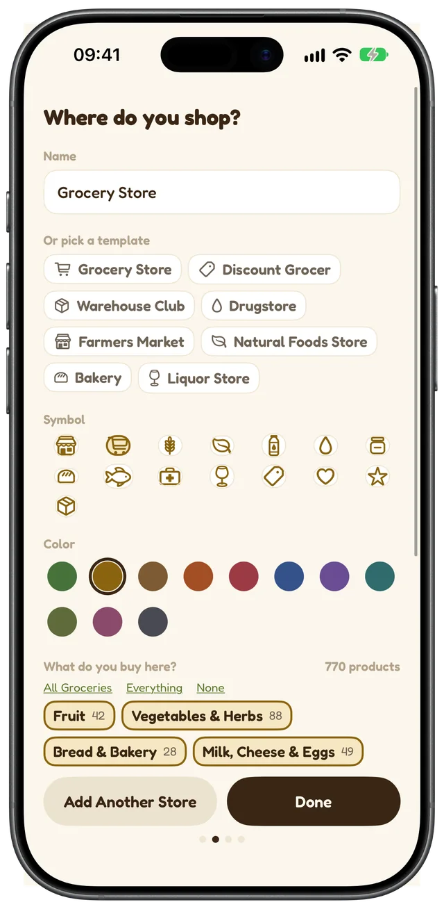
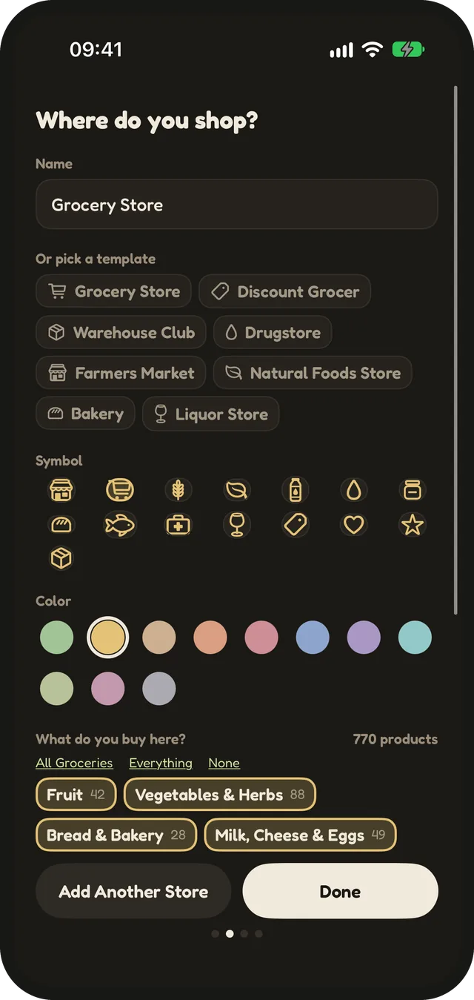
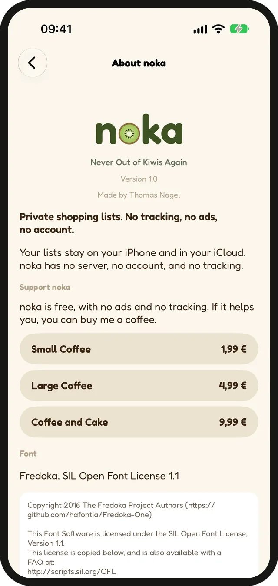
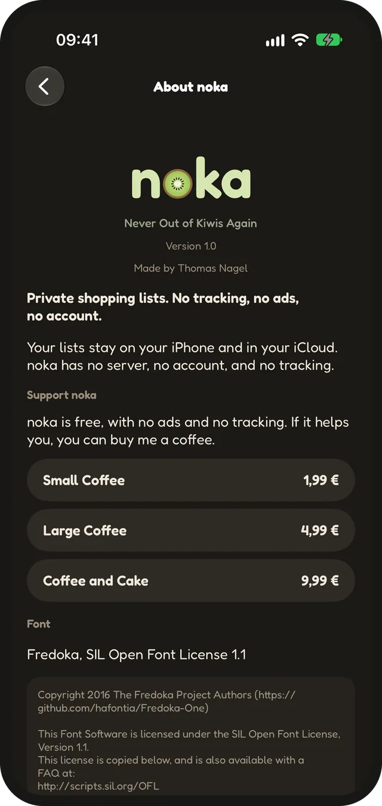
Facts
- Free. An optional tip is the only way to support it.
- No account, no tracking, no ads.
- Your data stays on your iPhone and in your iCloud. noka has no server.
- German and US English.
- iOS 17 or later. Made for iPhone and adapted to the iPhone Duo.
- Made by one person in Germany.
- Available [LAUNCH DATE]
Press kit
All photos in full resolution, the app icon (1024 px) and the wordmark as SVG and PNG, light and dark.